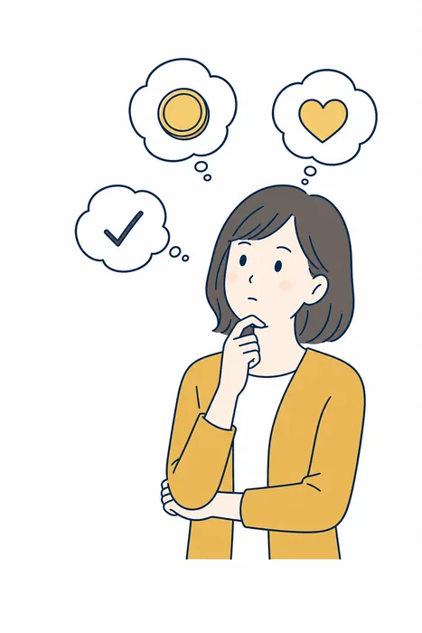
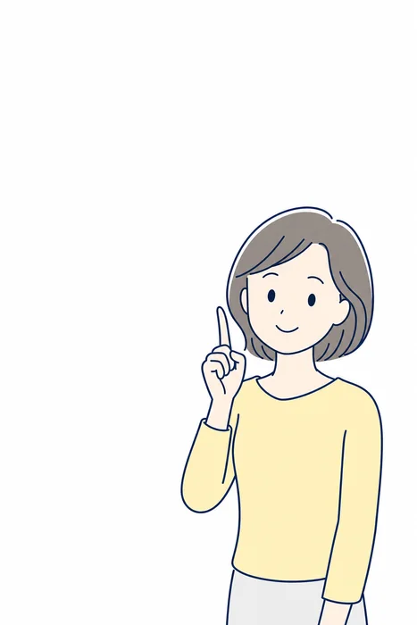

退職予定の方へ
最大365万円
受け取れる制度を
ご存じですか？
監修で安心
伴走サポート
ブロックOK
無料診断は、LINEで3ステップ
答えるのは、かんたんな質問だけです。ここまでは無料で、途中でやめても構いません。
-
1
LINEで
友だち追加ボタンを押すとLINEが開きます。登録に費用はかかりません。
-
2
質問に
答える年齢・退職の予定・健康保険に入っていた期間など。選ぶだけで進みます。
-
3
結果が
届く対象になりそうかどうかと、金額の目安が届きます。
ここまで、およそ1分。
やりとりはLINEだけ。
退職後に受け取れるお金は、1つじゃない
病気やケガで働けない状態にある場合、失業保険とは別のお金を受け取れる制度があります。 在職中から始められますが、申請した人しか受け取れません。会社から案内されることは、ほとんどありません。
傷病手当金を受け取った人の
3人に1人以上は、
心の不調が理由です。
精神及び行動の障害が 35.20% で最も多く、がん（13.57%）の約2.6倍。
平均の支給期間は 158日（約5か月）。
傷病手当金
病気やケガで働けない期間の生活を支える制度。給与のおよそ3分の2を、通算1年6か月まで。
失業保険（基本手当）
働ける状態になってから、仕事を探しながら受け取ります。療養中は対象になりません。
自己都合で辞めると、失業保険はすぐには出ません
手続きのあと7日間の待期があり、そのあと、自己都合退職には原則1か月の給付制限がかかります。 つまり辞めてすぐは、収入が空きます。ここを埋められるかどうかが、退職後のいちばん苦しい時期を左右します。
なぜ、多くの人が知らないのか
会社は教えてくれない
会社に案内する義務はなく、人事の担当者自身が知らないことも珍しくありません。
役所は聞かれたことにしか答えない
窓口では制度を説明してくれますが、「あなたはどうすべきか」までは踏み込みません。
申請した人だけが受け取れる
制度そのものは何十年も前からあります。裏技でも抜け道でもありません。
ひとりでやる？ 伴走してもらう？
ひとりでやる
- かかるお金：0円
- 退職日の決め方：誰も教えてくれない
- 受け取る順番：自分で調べる
- 書類の準備：何を書くかも自分で調べる
- 毎月の手続き：体調が悪い日も自分で判断
- 出し忘れ・不備：取り返せないことがある
- 退職の意思表示：自分で伝える
伴走してもらう
- 有料（相談は無料）
- 決める前に相談できる
- 一緒に組み立てる
- 準備と進め方を支援してもらえる
- 受給後まで相談できる
- 先回りで防げる
- 退職代行のオプションあり
給付金の申請そのものは、どちらの場合も本人が行います。 変わるのは「何を、いつ、どう出すか」を自分ひとりで判断するかどうかです。
※ 一般的な比較です。サポート内容・費用は事業者により異なります。支給可否は保険者（ハローワーク・健康保険の保険者）の審査によります。
ひとりでやる場合、つまずくのはここです
費用0円は魅力です。ただ、実際にひとりでやるとこの9つを全部、自分で判断することになります。
-
1
退職日に半日でも
出社したら対象外 -
2
健康保険が1年ないと
対象外 -
3
医師の証明は
診断書とは別物 -
4
申請書は4枚
1枚欠けても不可 -
5
申請も医師の証明も
毎月必要 -
6
失業保険の延長を
忘れると消える -
7
任意継続か国保か
20日以内に決める -
8
切り替えが早くても
遅くても損 -
9
不支給でも
理由を見て出し直せる
※ ボタンをタップすると退職リリーフの公式サイトへ移動します。
あなたは、対象になりそうですか？
- いま在職中、または退職してから間もない
- 勤務先の健康保険に1年以上加入している（または加入していた）
- 心身の不調があり、働き続けるのがつらい
- 次の就職先は、まだ決まっていない
- 辞めたあとの生活費に不安がある
- 会社に退職を言い出せずにいる

3つ以上当てはまるなら、一度確認しておく価値があります。当てはまらない項目があっても、対象外とはかぎりません。 判断するのは、あなたではなくハローワークと健康保険の保険者です。
退職リリーフとは？PR
運営は労働組合の新宿ユニオンで、社労士・弁護士の監修が入っています。 受け取れる可能性の確認から、退職日の決め方、書類の準備と進め方まで相談できます。 相談は無料。LINEで完結し、いつでもブロックできます。
※ 申請するのは本人です。書類の準備や進め方を支援するもので、申請の代行は行いません。 受給を保証するものでも、受給額を増やすものでもありません。
こんな窓口は、その場で断ってOKです
- 「条件を満たしていなくても大丈夫」「誰でももらえます」と言う
- 受診する病院や、診断書の書き方を指定してくる
- 受け取れる金額を、診断の時点で断言する
- 総額を聞いても答えず、契約を先に進めようとする
給付金を決めるのはハローワークと健康保険の保険者です。民間のサービスが増やすことはできません。
よくある質問
まとめ
受け取れるはずのお金は、
申請しなければ消えます
いま決めなくて、いいんです。ただ、退職日が過ぎてからでは動かせない条件があります。自分が対象かどうかだけは、今日たしかめられます。

まずは、対象かどうか確認してみる
LINE LINEで無料診断ボタンをタップすると退職リリーフの公式サイトへ移動します。 診断は1分ほど。相談した時点で契約になることはありません。料金とサポート範囲は、契約前に必ず文字で確認してください。
- 本ページはプロモーションを含みます
- 本ページは、公開されている情報をもとに編集部が作成した紹介記事です
- 傷病手当金・失業保険は、法令に定める要件を満たした場合に、保険者（健康保険組合・協会けんぽ）またはハローワークの審査を経て支給されるものです。本ページで紹介するサービスは、受給を保証するものではありません
- 給付金の申請は本人が行うものです。本ページで紹介するサービスは、書類の準備や進め方の支援を行うものであり、申請の代行を行うものではありません
- 本ページに記載の金額は、いずれも制度上の計算例です。実際に受け取れる金額・期間は、標準報酬月額・被保険者期間・療養の状況により異なります
- 心身の不調がないにもかかわらず、受給を目的として受診や診断書の取得を行うことは、不正受給にあたるおそれがあります
- 掲載内容は時点の情報です。最新の条件は各公式サイトおよび公的機関でご確認ください